Land marketing, on film.
Capra Studios makes marketing films for land: a listing, a fund’s holdings or a planned project. The property is shown on its real ground, in your brand, and the film ends on your name and your call to action.
the real ground, every tree ↓
For a listing, a fund or a project.
Land gets marketed for more than one reason. The film is built for the job it has to do and the people who have to see it.
A listing
For brokers and owners with land to sell. The tract’s strengths, shown to buyers who can’t walk it: the timber, the frontage, the water, the room to divide.
A fund or a portfolio
For investment managers and landowners. Show investors the kind of property you hold, in your brand, with your disclosures on screen word for word. The property can stay anonymous.
A planned project
For developers. The site as it stands and as it is planned, for investors, neighbors and the boards that have to approve it.
Built to make your case.
A marketing film makes the case for a property one point at a time, and ends by telling the viewer what to do next. Here is one, in order.
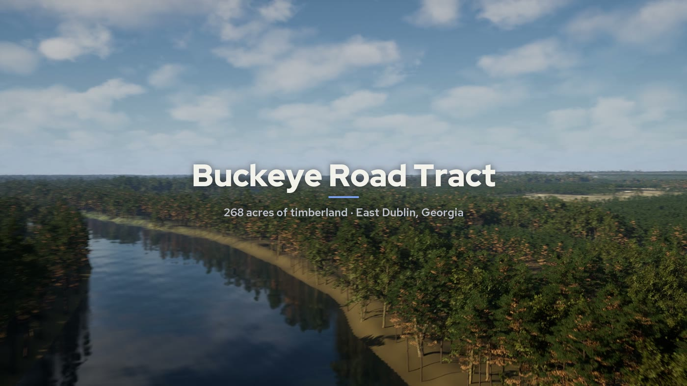
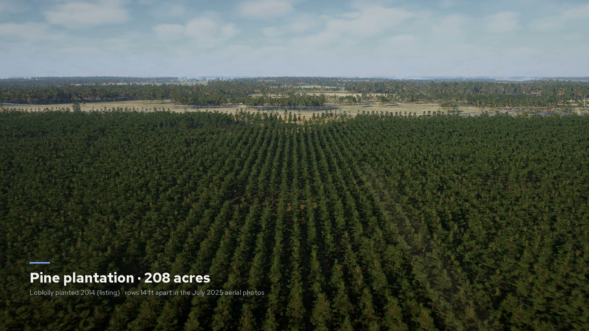
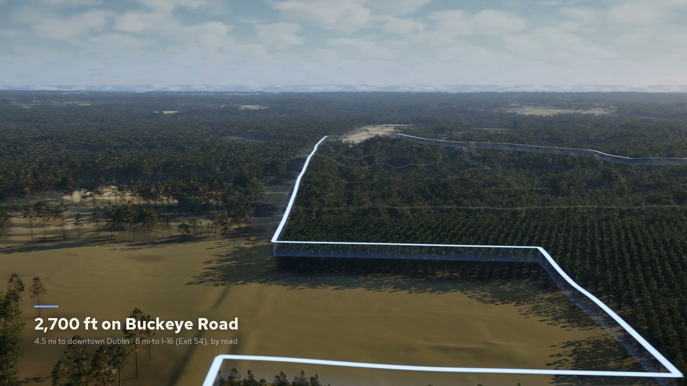
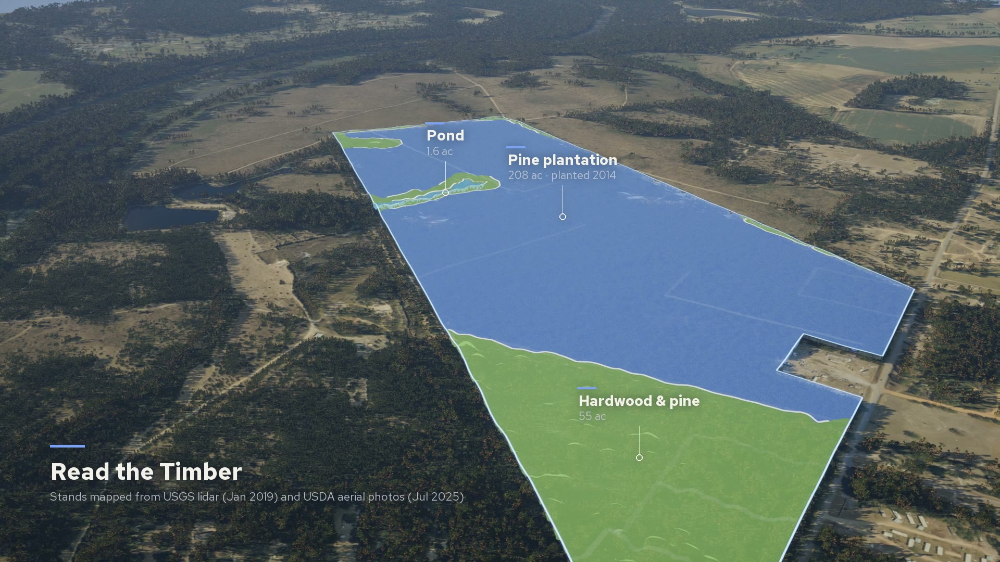
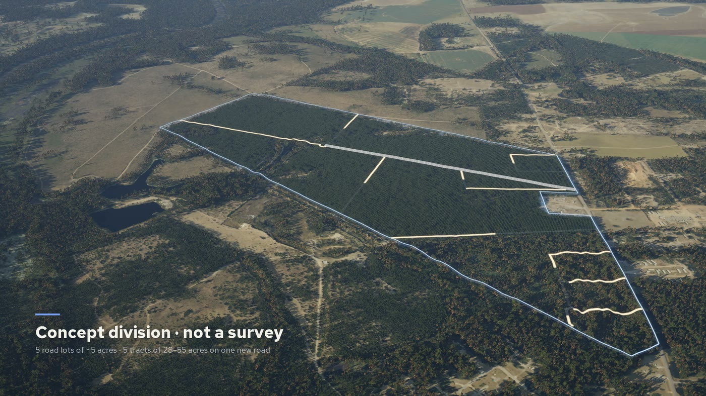
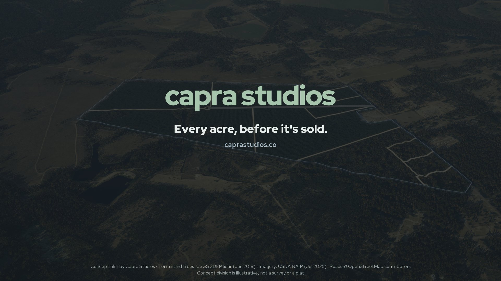
Frames from the Buckeye Road film, a studio piece made from a real listing.
One tract, a whole campaign.
The film is the center. Everything round it is cut from the same build, so your site, your feed and your brochure all match.
The film
About 80 to 130 seconds in 16:9, for your own site, a listing page and YouTube.
Cuts for the feed
A 4:5 cut for LinkedIn and Facebook and a vertical cut for Reels and Shorts, reframed so every caption stays in the picture.
Stills
Frames at full resolution for a listing, a deck or a brochure.
Your brand
Your colors, your typefaces and your logo on every card and label.
Your words
Your message as you would say it, and any disclosure on screen word for word.
Private when it has to be
Place names, roads and landmarks left out, and the surroundings generalized so the tract can’t be matched to a map.
Four films.
Each one is a real place. Three play in full with sound, and the fourth is shown frame by frame.
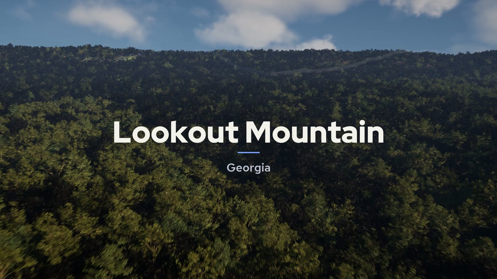
A mountain browLookout Mountain, Georgia · 147 acresWatch the film →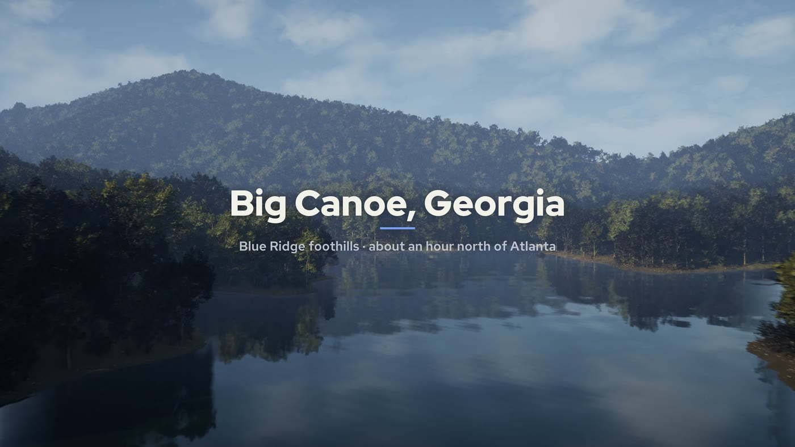
A mountain lotPetit Ridge, Big Canoe, Georgia · 4.9 acresWatch the film →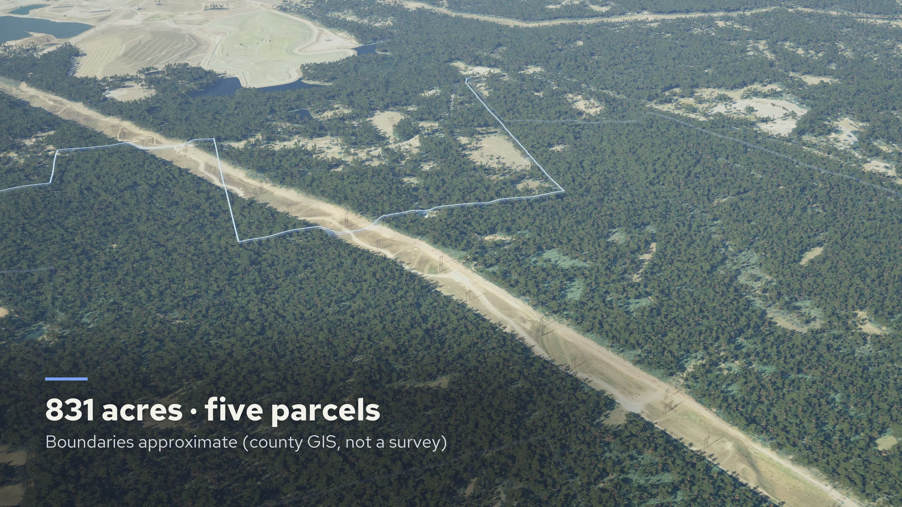
A development siteA proposed data center campus, Coweta County, Georgia · 831 acresSee it frame by frame →What a drone can’t show.
A drone shows what land looks like today from above the trees. It can’t show where the line runs, how the ground falls, what a homesite will look out on or what could be built.

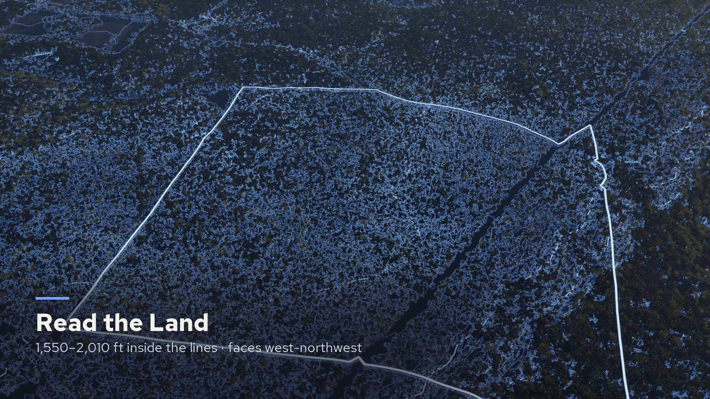
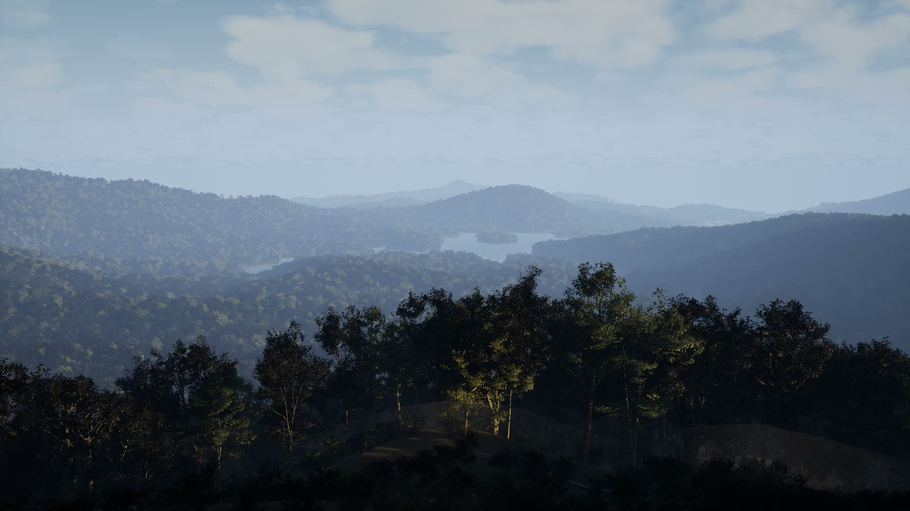
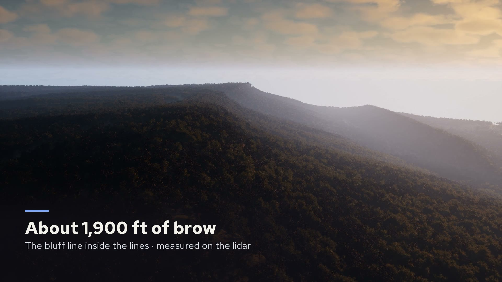


Every kind of land.
What matters changes with the land. This is what each kind of film brings out.
Timber and investment tracts
Stands by type and acreage, planting rows, road frontage, access and water. A tract can stay anonymous, with your brand and your disclosures on screen as you wrote them.
Hunting and recreational land
Fields and openings, ponds, access, and how the cover and the ground lie between them.
Farms and pasture
Open ground by acreage, ponds, road frontage and how the land falls.
Waterfront and mountain land
The shoreline, the homesite and the view from it, measured through the trees.
Plantations and conservation land
The whole property in one flight: timber, fields, water and roads. Place names can be left out when a sale is private.
Development land and planned projects
The site as it stands, then cleared, graded and built out to scale: residential communities, commercial and industrial sites, and data centers.
Built from your plan, or labeled illustrative when the layout is ours.
The films on this site show a timber tract, a mountain brow, a mountain lot and a development site.
From a parcel ID to a film.
Nobody has to drive out, and nothing waits on the weather. A single tract takes about a week.
- 1
Send the tract
Parcel IDs, a listing link, a survey or a site plan is enough.
- 2
We agree the pitch
We check the land against the public records, tell you what the film can show, and agree the points it has to make before you commit.
- 3
You mark up a draft
The wording, the shots and the order are yours to change.
- 4
You get the campaign
The film, the cuts and the stills in your brand. Where your MLS allows it, a version prepared to its rules.
Send a tract.
Tell us the parcel and what the film has to do: sell a listing, support an investment or show a plan.
Nothing goes on screen that we can’t source. Where every figure comes from →
Tracts, timber, farms and recreational land
Quoted by acreage and what the film has to show.
Development sites and planned projects
Quoted. A longer film with the build-out, the measurements and the regional view.
A single lot
$950. One lot or homesite, about 80 seconds, with a vertical cut and six stills.
↑ the first conversation is free
Small but mighty.
Capra Studios is a small studio in Atlanta, led by Kris Brown. The same team builds software: TrailGoat, our trail-running planner, maps 1,000+ race courses on 3D terrain and has 100+ full-length films of them.
say hi
Let’s make
an impression.
Send the parcel IDs or a listing link and we’ll tell you what a film of it can show. The first conversation is free.
Send a tractImagination. Made tangible.